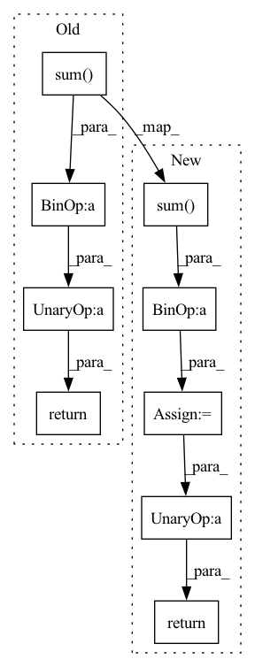

Pattern ID :24070
Before Change
input = input - input_mean
target - target - target_mean
alpha = (input * target).sum(-1) / ((target ** 2).sum( -1) + self.eps)
target = (target * alpha.view(bs,c,1))
res = input - target
sisdr = 10 * torch.log10(((target**2).sum(-1)/(res**2).sum(-1) + self.eps)).mean()
return -sisdr
After Change
input = input - input_mean
target = target - target_mean
alpha = (input * target).sum(-1) / ((target ** 2).sum( -1))
target = target * alpha.unsqueeze(-1)
res = input - target
losses = 10 * torch.log10((target**2).sum(-1)/((res**2).sum(-1) + self.eps) + self.eps)
losses = apply_reduction(losses, self.reduction)
return -losses
class SDSDRLoss(Module):
Scale-dependent signal-to-distortion ratio loss module.In pattern: SUPERPATTERN
Frequency: 3
Non-data size: 9
Instances Fragment ID: 74745143
Project Name: csteinmetz1/auraloss
Commit Name: 9cacf0f11d2b6f8f1671cf14ca5fda3c1e3632aa
Time: 2020-12-10
Author: csteinmetz1@gmail.com
File Name: auraloss/time.py
M Class Name: SISDRLoss
N Class Name: SISDRLoss
M Method Name: forward(3)
N Method Name: forward(3)
M Parent Class: Module
N Parent Class: torch.nn.Module
M File Name: auraloss/time.py
N File Name: auraloss/time.py
M Start Line: 99
M End Line: 112
N Start Line: 136
N End Line: 146
Before Change
return self.model.forward(target, pred)
def normalize_tensor(in_feat,eps=1e-10):
norm_factor = torch.sqrt(torch.sum( in_feat**2,dim=1,keepdim=True) )
return in_feat/ (norm_factor+ eps)
def l2(p0, p1, range=255.):
return .5*np.mean((p0 / range - p1 / range)**2)After Change
return self.model.forward(target, pred)
def normalize_tensor(in_feat,eps=1e-10):
l2_norm = torch.sum( in_feat**2,dim=1,keepdim=True)
norm_factor = torch.sqrt(l2_norm + eps)
// return in_feat/(norm_factor+eps)
return in_feat/( norm_factor)
def l2(p0, p1, range=255.):
return .5*np.mean((p0 / range - p1 / range)**2) Fragment ID: 74745159
Project Name: justin-tan/high-fidelity-generative-compression
Commit Name: d2436856c9ed336ea22cc8751138db0b72b89e36
Time: 2020-08-10
Author: jtan@spartan-login1.hpc.unimelb.edu.au
File Name: hific/perceptual_similarity/__init__.py
M Class Name: AnonimousClass
N Class Name: AnonimousClass
M Method Name: normalize_tensor(2)
N Method Name: normalize_tensor(2)
M Parent Class:
N Parent Class:
M File Name: hific/perceptual_similarity/__init__.py
N File Name: hific/perceptual_similarity/__init__.py
M Start Line: 43
M End Line: 44
N Start Line: 43
N End Line: 46
Before Change
b, sb = smooth_line(b.points, point_count)
dists = np.linalg.norm(a - b, axis=1)
dists = (dists[:-1] + dists[1:]) * 0.5
s = np.sum( dists) * 0.5 * (sa + sb) / area
return abs(1 - s)
@attrs
class CaptionsMatcher(AnnotationMatcher):After Change
//
// Instead, we can compute the upper boundary for the inter-line
// area based on the maximum point distance and line length.
max_area = np.max(dists) * max(np.sum( a_steps) , np.sum(b_steps))
area = np.dot(dists, a_steps + b_steps) * 0.5 * 0.5 / max_area
return abs(1 - area)
@attrs
class CaptionsMatcher(AnnotationMatcher): Fragment ID: 74745107
Project Name: openvinotoolkit/datumaro
Commit Name: 4b53be73721c23738592db619b89fdb1cc18f2fe
Time: 2021-12-22
Author: maxim.zhiltsov@intel.com
File Name: datumaro/components/operations.py
M Class Name: LineMatcher
N Class Name: LineMatcher
M Method Name: distance(2)
N Method Name: distance(2)
M Parent Class: _ShapeMatcher
N Parent Class: _ShapeMatcher
M File Name: datumaro/components/operations.py
N File Name: datumaro/components/operations.py
M Start Line: 771
M End Line: 785
N Start Line: 776
N End Line: 809